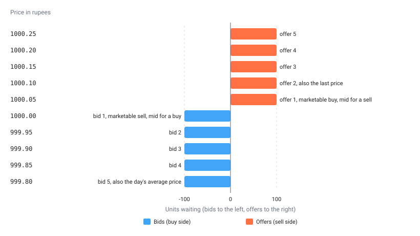

A price wrapper is place_order() with the source of the
price written into its name.
buy_at_best_bid_price(quantity = 10, product = "mis") says
“join the queue of buyers at the highest bid” in one line, where the
same order through place_order() would need you to know how
UBI describes that price. There are thirty-two of them on every
tradeable instrument, all defined on TradeableInstrument.
These are real orders.
Every member on this page sends an order through UBI to a real
broker, with real money, and none of them takes a dry_run
argument. To see what a wrapper would send, call place_order() with
the same arguments and dry_run = TRUE, as the example under
How a wrapper works shows.
All thirty-two wrappers
Every member on this page places orders. The table below lists each wrapper with its side, where its price comes from, what it sends to UBI, and how eager it is to fill. The last column follows one rule: pricing further down your own side of the book makes an order more patient, and reaching further into the other side makes it more aggressive, because it can sweep several levels at once.
| Member | Side | Where the price comes from | What it sends | Character |
|---|---|---|---|---|
buy_at_market_price() |
buy | the best offer, followed for 30 seconds |
market, which UBI runs as a
marketable_limit
|
fills now, at most two ticks past the offer |
sell_at_market_price() |
sell | the best bid, followed for 30 seconds |
market, which UBI runs as a
marketable_limit
|
fills now, at most two ticks past the bid |
buy_at_limit_price() |
buy | the price you give |
limit with price
|
your price or better |
sell_at_limit_price() |
sell | the price you give |
limit with price
|
your price or better |
buy_at_best_bid_price() |
buy | the best bid |
limit with
list(kind = "bid_level", level = 1)
|
patient, joins the queue |
sell_at_best_bid_price() |
sell | the best bid |
limit with
list(kind = "bid_level", level = 1)
|
aggressive, crosses the spread |
buy_at_best_offer_price() |
buy | the best offer |
limit with
list(kind = "offer_level", level = 1)
|
aggressive, crosses the spread |
sell_at_best_offer_price() |
sell | the best offer |
limit with
list(kind = "offer_level", level = 1)
|
patient, joins the queue |
buy_at_mid_price() |
buy | halfway between the best bid and the best offer |
limit with list(kind = "mid")
|
inside the spread |
sell_at_mid_price() |
sell | halfway between the best bid and the best offer |
limit with list(kind = "mid")
|
inside the spread |
buy_at_volume_weighted_average_price() |
buy | the day’s volume weighted average price |
limit with list(kind = "vwap")
|
either way |
sell_at_volume_weighted_average_price() |
sell | the day’s volume weighted average price |
limit with list(kind = "vwap")
|
either way |
buy_at_last_price() |
buy | the last traded price |
limit with list(kind = "last")
|
either way |
sell_at_last_price() |
sell | the last traded price |
limit with list(kind = "last")
|
either way |
buy_at_marketable_price() |
buy | the best offer, the price that fills a buy now |
limit with list(kind = "marketable") plus
buffer_percent
|
fills now, capped |
sell_at_marketable_price() |
sell | the best bid, the price that fills a sell now |
limit with list(kind = "marketable") plus
buffer_percent
|
fills now, capped |
buy_at_second_best_bid_price() |
buy | the second best bid |
limit with
list(kind = "bid_level", level = 2)
|
patient, deeper in the queue |
buy_at_third_best_bid_price() |
buy | the third best bid |
limit with
list(kind = "bid_level", level = 3)
|
patient, deeper in the queue |
buy_at_fourth_best_bid_price() |
buy | the fourth best bid |
limit with
list(kind = "bid_level", level = 4)
|
patient, deeper in the queue |
buy_at_fifth_best_bid_price() |
buy | the fifth best bid |
limit with
list(kind = "bid_level", level = 5)
|
patient, deeper in the queue |
buy_at_second_best_offer_price() |
buy | the second best offer |
limit with
list(kind = "offer_level", level = 2)
|
aggressive, sweeps deeper |
buy_at_third_best_offer_price() |
buy | the third best offer |
limit with
list(kind = "offer_level", level = 3)
|
aggressive, sweeps deeper |
buy_at_fourth_best_offer_price() |
buy | the fourth best offer |
limit with
list(kind = "offer_level", level = 4)
|
aggressive, sweeps deeper |
buy_at_fifth_best_offer_price() |
buy | the fifth best offer |
limit with
list(kind = "offer_level", level = 5)
|
aggressive, sweeps deeper |
sell_at_second_best_bid_price() |
sell | the second best bid |
limit with
list(kind = "bid_level", level = 2)
|
aggressive, sweeps deeper |
sell_at_third_best_bid_price() |
sell | the third best bid |
limit with
list(kind = "bid_level", level = 3)
|
aggressive, sweeps deeper |
sell_at_fourth_best_bid_price() |
sell | the fourth best bid |
limit with
list(kind = "bid_level", level = 4)
|
aggressive, sweeps deeper |
sell_at_fifth_best_bid_price() |
sell | the fifth best bid |
limit with
list(kind = "bid_level", level = 5)
|
aggressive, sweeps deeper |
sell_at_second_best_offer_price() |
sell | the second best offer |
limit with
list(kind = "offer_level", level = 2)
|
patient, deeper in the queue |
sell_at_third_best_offer_price() |
sell | the third best offer |
limit with
list(kind = "offer_level", level = 3)
|
patient, deeper in the queue |
sell_at_fourth_best_offer_price() |
sell | the fourth best offer |
limit with
list(kind = "offer_level", level = 4)
|
patient, deeper in the queue |
sell_at_fifth_best_offer_price() |
sell | the fifth best offer |
limit with
list(kind = "offer_level", level = 5)
|
patient, deeper in the queue |
The chart below places the wrappers on one order book, the five-level quote UBI’s offline test suite uses: a tick of 0.05 rupees, bids from 1000.00 downwards and offers from 1000.05 upwards, 100 units at every level, a last price of 1000.10 and a day’s average price of 999.80. The prices beside each level are what UBI’s own resolver gives for that quote, from UBI’s worked examples.

The table below lists every wrapper that prices at each level of that book.
| Price | Level | Wrappers that price here |
|---|---|---|
| 1000.25 | offer 5 |
buy_at_fifth_best_offer_price(),
sell_at_fifth_best_offer_price()
|
| 1000.20 | offer 4 |
buy_at_fourth_best_offer_price(),
sell_at_fourth_best_offer_price()
|
| 1000.15 | offer 3 |
buy_at_third_best_offer_price(),
sell_at_third_best_offer_price()
|
| 1000.10 | offer 2, also the last price |
buy_at_second_best_offer_price(),
sell_at_second_best_offer_price(),
buy_at_last_price(), sell_at_last_price()
|
| 1000.05 | offer 1, marketable buy, mid for a sell |
buy_at_best_offer_price(),
sell_at_best_offer_price(),
buy_at_marketable_price(),
sell_at_mid_price()
|
| 1000.00 | bid 1, marketable sell, mid for a buy |
buy_at_best_bid_price(),
sell_at_best_bid_price(),
sell_at_marketable_price(),
buy_at_mid_price()
|
| 999.95 | bid 2 |
buy_at_second_best_bid_price(),
sell_at_second_best_bid_price()
|
| 999.90 | bid 3 |
buy_at_third_best_bid_price(),
sell_at_third_best_bid_price()
|
| 999.85 | bid 4 |
buy_at_fourth_best_bid_price(),
sell_at_fourth_best_bid_price()
|
| 999.80 | bid 5, also the day’s average price |
buy_at_fifth_best_bid_price(),
sell_at_fifth_best_bid_price(),
buy_at_volume_weighted_average_price(),
sell_at_volume_weighted_average_price()
|
Two things in the chart are easy to get backwards. A buy at the best bid and a sell at the best bid use the same price but mean opposite things: the buy waits with the other buyers, while the sell crosses the spread and fills against them at once. And the midpoint, 1000.025, is not a whole number of ticks, so UBI rounds it towards the patient side, down to 1000.00 for a buy and up to 1000.05 for a sell, so a mid-price order never crosses the spread.
How a wrapper works
Apart from the two market and the two limit wrappers, no wrapper
reads the order book itself. Each one sends a limit order
with no price and a price_reference that names the level,
and UBI’s order engine reads the live quote, applies any offset, rounds
the result to the tick and sends the order, all in one step. The price
is therefore the one in the book when the order leaves, not the one when
you called the method. The flowchart below follows one wrapper through
those steps.
flowchart LR
A["buy_at_second_best_offer_price<br/>quantity = 10, product = mis"] --> B["place_order<br/>order_type limit, no price<br/>price_reference offer_level 2"]
B --> C{"Is UBI's order<br/>engine running?"}
C -- "no" --> E["ServiceUnavailableError<br/>HTTP 503, nothing is sent"]
C -- "yes" --> F["UBI reads the quote,<br/>takes offer level 2,<br/>rounds it to the tick"]
F --> G{"Is the book<br/>that deep?"}
G -- "no" --> H["ServiceUnavailableError<br/>HTTP 503"]
G -- "yes" --> I["limit order sent<br/>to a broker"]
Every order goes through UBI’s order engine, so every wrapper needs it running. A limit order priced by a reference is never held by the engine, so these wrappers send their order at once; only the two limit wrappers can be held, as described below. Order engine explains what the engine does.
The wrappers have no dry_run argument. To preview one,
send the same order through place_order(). The example
below previews
buy_at_best_offer_price(quantity = 1, product = "cnc") on
RELIANCE. When the Python version of this preview was run against a
local UBI on 2026-09-26, the only level in the book was one offer at
1226.0, and the price it printed was 1226.0.
Common parameters
Every wrapper takes the same five parameters, in the same positions,
so you can switch from one to another by changing only its name. The two
limit wrappers put price first and add hold at
the end, the two market wrappers add as_marketable_limit at
the end, and the two marketable wrappers add buffer_percent
at the end. The table below lists them all.
| Name | Type | Required | Default | Description |
|---|---|---|---|---|
price |
numeric | limit pair only | The limit price in rupees, for buy_at_limit_price() and
sell_at_limit_price(). |
|
quantity |
integer | yes | The quantity in units, not lots. | |
product |
character | yes |
cnc, mis or nrml. It has no
default on purpose, because it decides whether a buy becomes shares you
keep or a position the broker closes before the session ends. |
|
validity |
character or NULL
|
no | NULL |
day or ioc. UBI uses day when
it is NULL. |
after_market |
logical | no | FALSE |
TRUE sends an after-market order. |
tag |
character or NULL
|
no | NULL |
A label of up to twenty letters and digits. |
hold |
logical | no | TRUE |
For the limit pair only: TRUE lets UBI’s order engine
hold a day order until the other side of the book reaches
the price, and FALSE sends it to a broker at once. |
as_marketable_limit |
logical | no | TRUE |
For the market pair only: TRUE lets UBI’s order engine
send the order as a limit that follows the other side of the book for up
to 30 seconds, and FALSE sends a real market order to a
broker at once. |
buffer_percent |
numeric or NULL
|
no | NULL |
For the marketable pair only: how far past the best price to set the
cap, such as 0.5 for half a per cent. A negative number
moves it the other way. |
Anything beyond these, such as a disclosed quantity, a stop, or one
of the offsets below, is a reason to call place_order()
directly.
Returns
Every wrapper returns the named list that place_order()
returns, holding broker, order_id,
outcome and the rest.
Errors
Every wrapper can signal any condition place_order()
signals. The table below lists the ones a wrapper is most likely to
meet; the market and limit wrappers cannot signal the first two, because
they send no reference.
| Condition | When |
|---|---|
ServiceUnavailableError |
UBI could not work the price out: there is no live quote, the book is not as deep as the level asked for, or the brokers do not agree on a tick size. This is what an order book looks like outside market hours. It is also signalled when UBI’s order engine is not running. |
BadRequestError |
A field is invalid, or the offsets pushed the price to zero or below. |
OrderRejectedError |
The broker refused the order. |
UnifiedBrokerInterfaceError |
Any other failure reported by, or on the way to, UBI. |
The seven price references
A price_reference is a small named list that describes a
price instead of stating it. The wrappers use six of the seven kinds;
the seventh, absolute, and the two offsets
offset_percent and offset_ticks are reachable
only through place_order(). The table below lists every
kind, what UBI reads for it, and which wrappers send it.
kind |
What UBI reads | Wrappers that send it |
|---|---|---|
absolute |
The price inside the reference, rounded to the tick
towards the patient side |
none |
last |
The last traded price |
buy_at_last_price(),
sell_at_last_price()
|
mid |
Halfway between the best bid and the best offer |
buy_at_mid_price(),
sell_at_mid_price()
|
vwap |
The day’s volume weighted average price, which the quote calls
average_price
|
buy_at_volume_weighted_average_price(),
sell_at_volume_weighted_average_price()
|
bid_level |
One level of the bid side, the best bid being level 1 | the ten ..._bid_price() wrappers |
offer_level |
One level of the offer side, the best offer being level 1 | the ten ..._offer_price() wrappers |
marketable |
The best price on the other side: the best offer for a buy, the best bid for a sell |
buy_at_marketable_price(),
sell_at_marketable_price()
|
A reference can carry a few optional fields besides
kind. The table below lists them with UBI’s rules.
| Field | Type | Used by | Rules |
|---|---|---|---|
price |
numeric |
absolute only, where it is required |
Above zero. |
level |
integer |
bid_level, offer_level
|
From 1 to 5, which is as deep as UBI’s quote carries. Defaults to 1. |
buffer_percent |
numeric | any kind | A percentage offset, applied first. May be negative. |
offset_percent |
numeric | any kind | A second percentage offset, applied after the first. May be negative. |
offset_ticks |
integer | any kind | An offset in whole ticks, applied last. May be negative. |
UBI always applies an offset in the direction that makes the order
more likely to fill: a buy’s price goes up and a sell’s goes down, and a
negative offset improves the price instead. The final price is rounded
to a whole tick, towards the patient side for every kind except
marketable, which rounds towards the market because it is
meant to fill. UBI’s page on price
and quantity references gives the full rules and every error
message.
The example below sends a buy one tick above the best bid, which no
wrapper covers, through place_order().
reliance$place_order(
transaction_type = "buy",
order_type = "limit",
quantity = 10,
product = "mis",
price_reference = list(
kind = "bid_level",
level = 1,
offset_ticks = 1
)
)An empty or shallow book
Every reference except absolute reads the live quote,
and a quote can be thinner than the reference needs. When it is, UBI
refuses the order with HTTP 503 before anything reaches a broker, and
the package signals ServiceUnavailableError. The message
names the problem, for example
a bid_level price reference needs 3 level(s) on the buy side of the book and the quote carries 1.
The book really does get this thin. The quote for RELIANCE captured from a local UBI on Saturday 2026-09-26, with the market closed, held no bids at all and a single offer: 855 units at 1226.0 from 11 orders. Its last price was 1226.0 and its day’s average price was 1220.44.
The table below shows how each wrapper would fare against that book, by UBI’s rules. Only the best-offer buy was actually sent as a dry run; the other rows are worked out from the rules above and were not tested.
| Wrappers | Against that book |
|---|---|
buy_at_best_offer_price(),
sell_at_best_offer_price()
|
Priced at 1226.0. The dry run of the buy confirmed it. |
buy_at_marketable_price() |
Priced at 1226.0, the best offer. |
sell_at_marketable_price(), every
..._bid_price() wrapper |
Refused with 503, because there is no bid. |
buy_at_mid_price(),
sell_at_mid_price()
|
Refused with 503, because a midpoint needs both sides. |
the second to fifth
..._offer_price() wrappers |
Refused with 503, because there is only one offer. |
buy_at_last_price(),
sell_at_last_price()
|
Priced at 1226.0. |
buy_at_volume_weighted_average_price(),
sell_at_volume_weighted_average_price()
|
Priced at 1220.4 for a buy and 1220.5 for a sell, after rounding 1220.44 to the 0.1 tick towards the patient side. |
buy_at_market_price() |
Sent as a limit two ticks above 1226.0, because UBI runs it as a
marketable_limit. |
sell_at_market_price() |
Refused with 409 rather than 503, because nobody is bidding and the
marketable_limit it runs as refuses an empty side.
as_marketable_limit = FALSE sends a real market order
instead. |
| the limit pair | Not affected, because they send no reference. |
Ask for a shallower level, or state the price.
When a 503 names the book’s depth, ask for a shallower level or a
kind that needs less of the book, such as last. When the
market is closed, a limit order with after_market = TRUE is
the order that will survive until the next session, because UBI sends an
after-market order to the broker at once rather than holding it in its
engine.
Market and limit
These four send a plain order with no reference. They are the ones the position and holdings methods use.
UBI’s order engine holds a day limit order from the two
limit wrappers rather than resting it at a broker, and sends it only
once the other side of the book reaches the price, so an order that
never fills costs no order messages. Until then the answer has an
outcome of armed and a parent_id
instead of an order_id, the order is in parents rather than in
orders, and it is changed with modify_order(parent_id = ...)
and cancelled with cancel_parent().
Pass hold = FALSE to send the order to a broker at once,
which an instrument with no live quote needs, because the engine would
otherwise hold its order all day without sending it. The holdings
methods of MutualFund and FixedIncome always
pass it; Order
engine lists when else to.
The engine does not pass a market order from the two market wrappers
straight to a broker either. Since 2026-10-06 it runs it as a
marketable_limit order, a limit two ticks past
the other side’s best price that follows that price until it fills, and
cancels whatever has not filled after 30 seconds. An order that cannot
be priced, because the other side of the book is empty or the quote is
missing or stale, signals ConflictError with nothing sent.
Pass as_marketable_limit = FALSE for a real market order,
which the holdings methods of MutualFund and
FixedIncome also always do, and use MarketableLimitOrder
to choose a different buffer or time.
The example below buys ten shares at market for an intraday position, and places a limit sell of the same ten at 1250 rupees.
reliance$buy_at_market_price(quantity = 10, product = "mis")
reliance$sell_at_limit_price(price = 1250, quantity = 10, product = "mis")buy_at_market_price
The method’s signature is shown below. It places orders, and it sends
POST /api/orders/place.
buy_at_market_price(
quantity,
product,
validity = NULL,
after_market = FALSE,
tag = NULL,
as_marketable_limit = TRUE
)This method buys at whatever price the market is asking. A market order takes the best price on offer and fills straight away while the market is open. The price is therefore not known before the order is sent, and in a thin book it can be a good deal worse than the last traded price.
It sends a market order with no price and no reference.
Since 2026-10-06 UBI’s order engine does not pass that to a broker as a
market order. It runs it as a marketable_limit
order instead: a limit two ticks past the best offer, moved
after the offer on every tick until it fills, with whatever has not
filled cancelled 30 seconds after it was placed. So the order cannot
fill far from the price that was showing, but it can end part filled,
and orders shows what happened.
UBI refuses the order with HTTP 409, which signals
ConflictError, and sends nothing, when nobody is offering,
no live quote has arrived or the quote is marked stale. An after-market
order is always sent as a market order.
as_marketable_limit = FALSE sends
synthetic = list(type = "simple"), which makes the broker
receive a real market order at once; an instrument with no live quote,
such as a mutual fund or a cash bond, needs it. Some brokers refuse a
market order sent through an API outright: on 2026-10-06 Flattrade
answered
ALGO_CHK: MKT Order type not allowed for API order, which
signals OrderRejectedError.
sell_at_market_price
The method’s signature is shown below. It places orders, and it sends
POST /api/orders/place.
sell_at_market_price(
quantity,
product,
validity = NULL,
after_market = FALSE,
tag = NULL,
as_marketable_limit = TRUE
)This method sells at whatever price the market is bidding. A market order takes the best price being bid and fills straight away while the market is open. The price is therefore not known before the order is sent, and in a thin book it can be a good deal worse than the last traded price.
It sends a market order with no price and no reference.
Since 2026-10-06 UBI’s order engine does not pass that to a broker as a
market order. It runs it as a marketable_limit
order instead: a limit two ticks past the best bid, moved
after the bid on every tick until it fills, with whatever has not filled
cancelled 30 seconds after it was placed. So the order cannot fill far
from the price that was showing, but it can end part filled, and
orders shows what happened.
UBI refuses the order with HTTP 409, which signals
ConflictError, and sends nothing, when nobody is bidding,
no live quote has arrived or the quote is marked stale. An after-market
order is always sent as a market order.
as_marketable_limit = FALSE sends
synthetic = list(type = "simple"), which makes the broker
receive a real market order at once; an instrument with no live quote,
such as a mutual fund or a cash bond, needs it. Some brokers refuse a
market order sent through an API outright: on 2026-10-06 Flattrade
answered
ALGO_CHK: MKT Order type not allowed for API order, which
signals OrderRejectedError.
buy_at_limit_price
The method’s signature is shown below. It places orders, and it sends
POST /api/orders/place.
buy_at_limit_price(
price,
quantity,
product,
validity = NULL,
after_market = FALSE,
tag = NULL,
hold = TRUE
)This method buys at a price of your choosing, or better. A limit buy never pays more than the price given. It waits in the market until someone sells at that price or lower, and it may never fill at all.
It sends a limit order at the price you
give, with no reference. UBI’s engine holds it until the book reaches
the price, unless hold is FALSE, which sends
synthetic = list(type = "simple") so that it goes to a
broker at once.
sell_at_limit_price
The method’s signature is shown below. It places orders, and it sends
POST /api/orders/place.
sell_at_limit_price(
price,
quantity,
product,
validity = NULL,
after_market = FALSE,
tag = NULL,
hold = TRUE
)This method sells at a price of your choosing, or better. A limit sell never accepts less than the price given. It waits in the market until someone buys at that price or higher, and it may never fill at all.
It sends a limit order at the price you
give, with no reference. UBI’s engine holds it until the book reaches
the price, unless hold is FALSE, which sends
synthetic = list(type = "simple") so that it goes to a
broker at once.
Top of the book
These four price the order at the best bid or the best offer. The buy at the best bid and the sell at the best offer are the patient pair, which wait in the queue on their own side; the other two are the aggressive pair, which cross the spread and fill against whoever is waiting.
The example below joins the queue of buyers with a patient order for ten units.
reliance$buy_at_best_bid_price(quantity = 10, product = "mis")buy_at_best_bid_price
The method’s signature is shown below. It places orders, and it sends
POST /api/orders/place.
buy_at_best_bid_price(quantity, product, validity = NULL, after_market = FALSE, tag = NULL)This method buys patiently, joining the queue at the highest price anyone is bidding. This is the patient side of the pair. It prices the order alongside everyone already waiting at the best price on its own side of the book, so it saves the spread but only fills when the market comes to it.
It sends a limit order with no price and
price_reference = list(kind = "bid_level", level = 1).
sell_at_best_bid_price
The method’s signature is shown below. It places orders, and it sends
POST /api/orders/place.
sell_at_best_bid_price(quantity, product, validity = NULL, after_market = FALSE, tag = NULL)This method sells at once, by crossing the spread to the highest price anyone is bidding. This is the aggressive side of the pair. It prices the order where the other side of the market already is, so it fills immediately against whoever is waiting there, and it pays the spread for that certainty.
It sends a limit order with no price and
price_reference = list(kind = "bid_level", level = 1).
buy_at_best_offer_price
The method’s signature is shown below. It places orders, and it sends
POST /api/orders/place.
buy_at_best_offer_price(quantity, product, validity = NULL, after_market = FALSE, tag = NULL)This method buys at once, by crossing the spread to the lowest price anyone is offering. This is the aggressive side of the pair. It prices the order where the other side of the market already is, so it fills immediately against whoever is waiting there, and it pays the spread for that certainty.
It sends a limit order with no price and
price_reference = list(kind = "offer_level", level = 1).
sell_at_best_offer_price
The method’s signature is shown below. It places orders, and it sends
POST /api/orders/place.
sell_at_best_offer_price(quantity, product, validity = NULL, after_market = FALSE, tag = NULL)This method sells patiently, joining the queue at the lowest price anyone is offering. This is the patient side of the pair. It prices the order alongside everyone already waiting at the best price on its own side of the book, so it saves the spread but only fills when the market comes to it.
It sends a limit order with no price and
price_reference = list(kind = "offer_level", level = 1).
Inside the spread and the day’s benchmarks
These six price the order from a single number in the quote rather than from one side of the book: the midpoint, the day’s volume weighted average price, or the last traded price. UBI rounds each to the tick, towards the patient side.
The example below sells ten units at the day’s average price, a common benchmark to measure a fill against.
reliance$sell_at_volume_weighted_average_price(quantity = 10, product = "mis")buy_at_mid_price
The method’s signature is shown below. It places orders, and it sends
POST /api/orders/place.
buy_at_mid_price(quantity, product, validity = NULL, after_market = FALSE, tag = NULL)This method buys halfway between the best bid and the best offer. The mid price sits inside the spread, where nobody is waiting, so the order is better than joining its own side of the book and cheaper than crossing to the other. It fills only if the market moves that far. UBI works the midpoint out when it sends the order and rounds it to the tick, down for a buy and up for a sell, so the order never crosses the spread.
It sends a limit order with no price and
price_reference = list(kind = "mid").
sell_at_mid_price
The method’s signature is shown below. It places orders, and it sends
POST /api/orders/place.
sell_at_mid_price(quantity, product, validity = NULL, after_market = FALSE, tag = NULL)This method sells halfway between the best bid and the best offer. The mid price sits inside the spread, where nobody is waiting, so the order is better than joining its own side of the book and cheaper than crossing to the other. It fills only if the market moves that far. UBI works the midpoint out when it sends the order and rounds it to the tick, down for a buy and up for a sell, so the order never crosses the spread.
It sends a limit order with no price and
price_reference = list(kind = "mid").
buy_at_volume_weighted_average_price
The method’s signature is shown below. It places orders, and it sends
POST /api/orders/place.
buy_at_volume_weighted_average_price(
quantity,
product,
validity = NULL,
after_market = FALSE,
tag = NULL
)This method buys at the average price the day has traded at so far. The volume weighted average price is where the day’s business has actually been done, which makes it a common benchmark to measure a fill against. It has no relation to where the book is now, so the order may cross the spread or sit far away from it. Not every broker reports it. UBI reads it when it sends the order and rounds it to the tick.
It sends a limit order with no price and
price_reference = list(kind = "vwap").
sell_at_volume_weighted_average_price
The method’s signature is shown below. It places orders, and it sends
POST /api/orders/place.
sell_at_volume_weighted_average_price(
quantity,
product,
validity = NULL,
after_market = FALSE,
tag = NULL
)This method sells at the average price the day has traded at so far. The volume weighted average price is where the day’s business has actually been done, which makes it a common benchmark to measure a fill against. It has no relation to where the book is now, so the order may cross the spread or sit far away from it. Not every broker reports it. UBI reads it when it sends the order and rounds it to the tick.
It sends a limit order with no price and
price_reference = list(kind = "vwap").
buy_at_last_price
The method’s signature is shown below. It places orders, and it sends
POST /api/orders/place.
buy_at_last_price(quantity, product, validity = NULL, after_market = FALSE, tag = NULL)This method buys with a limit order at the price the instrument last traded at. The last traded price is where the most recent deal was done, which may be on either side of the book by the time the order arrives, so the order may fill at once or rest. UBI reads it when it sends the order and rounds it to the tick.
It sends a limit order with no price and
price_reference = list(kind = "last").
sell_at_last_price
The method’s signature is shown below. It places orders, and it sends
POST /api/orders/place.
sell_at_last_price(quantity, product, validity = NULL, after_market = FALSE, tag = NULL)This method sells with a limit order at the price the instrument last traded at. The last traded price is where the most recent deal was done, which may be on either side of the book by the time the order arrives, so the order may fill at once or rest. UBI reads it when it sends the order and rounds it to the tick.
It sends a limit order with no price and
price_reference = list(kind = "last").
Marketable limits
A marketable limit is what a market order has become in India.
Brokers convert an API market order into a limit order with price
protection, and some refuse market orders outright, so these two state
the cap themselves: the order fills at once up to the price on the other
side of the book and never beyond it. buffer_percent moves
the cap further to reach deeper into the book, and
validity = "ioc" cancels whatever cannot fill at once.
UBI now does something similar with every plain market order, as buy_at_market_price()
describes, but the two differ. A marketable limit from this pair is
priced once, when it is sent, and then rests or is cancelled as its
validity says. A market order run as a marketable_limit is
priced in ticks rather than per cent, follows the other side of the book
until it fills, and is cancelled after 30 seconds.
The example below buys up to 100 units at no more than half a per cent above the best offer, and cancels the rest.
reliance$buy_at_marketable_price(
quantity = 100,
product = "mis",
validity = "ioc",
buffer_percent = 0.5
)buy_at_marketable_price
The method’s signature is shown below. It places orders, and it sends
POST /api/orders/place.
buy_at_marketable_price(
quantity,
product,
validity = NULL,
after_market = FALSE,
tag = NULL,
buffer_percent = NULL
)This method buys now with a limit order priced at the best offer, the
price it takes to fill immediately. This is what a market order has
become in India: brokers convert an API market order into a limit order
with price protection, and some refuse market orders outright. A
marketable limit states the cap itself, so the order fills at once up to
that price and never beyond it. UBI reads the best offer when it sends
the order, and buffer_percent moves the cap that far above
it to reach deeper into the book. Pair it with
validity = "ioc" to cancel whatever cannot fill at
once.
It sends a limit order with no price and
price_reference = list(kind = "marketable"), adding a
buffer_percent element when you pass one.
sell_at_marketable_price
The method’s signature is shown below. It places orders, and it sends
POST /api/orders/place.
sell_at_marketable_price(
quantity,
product,
validity = NULL,
after_market = FALSE,
tag = NULL,
buffer_percent = NULL
)This method sells now with a limit order priced at the best bid, the
price it takes to fill immediately. This is what a market order has
become in India: brokers convert an API market order into a limit order
with price protection, and some refuse market orders outright. A
marketable limit states the cap itself, so the order fills at once up to
that price and never beyond it. UBI reads the best bid when it sends the
order, and buffer_percent moves the cap that far below it
to reach deeper into the book. Pair it with
validity = "ioc" to cancel whatever cannot fill at
once.
It sends a limit order with no price and
price_reference = list(kind = "marketable"), adding a
buffer_percent element when you pass one.
Deeper in the book
These sixteen price the order at the second to the fifth level of one
side of the book. Pricing further down your own side waits behind more
of the queue, so it fills less often and at a better price when it does.
Reaching further into the other side can sweep every level down to the
one named, so it fills more at a worse average price. A level deeper
than the book holds signals ServiceUnavailableError.
The example below sells ten units patiently at the third best offer.
reliance$sell_at_third_best_offer_price(quantity = 10, product = "mis")buy_at_second_best_bid_price
The method’s signature is shown below. It places orders, and it sends
POST /api/orders/place.
buy_at_second_best_bid_price(quantity, product, validity = NULL, after_market = FALSE, tag = NULL)This method buys at the second best price on the buy side of the book.
It sends a limit order with no price and
price_reference = list(kind = "bid_level", level = 2).
buy_at_third_best_bid_price
The method’s signature is shown below. It places orders, and it sends
POST /api/orders/place.
buy_at_third_best_bid_price(quantity, product, validity = NULL, after_market = FALSE, tag = NULL)This method buys at the third best price on the buy side of the book.
It sends a limit order with no price and
price_reference = list(kind = "bid_level", level = 3).
buy_at_fourth_best_bid_price
The method’s signature is shown below. It places orders, and it sends
POST /api/orders/place.
buy_at_fourth_best_bid_price(quantity, product, validity = NULL, after_market = FALSE, tag = NULL)This method buys at the fourth best price on the buy side of the book.
It sends a limit order with no price and
price_reference = list(kind = "bid_level", level = 4).
buy_at_fifth_best_bid_price
The method’s signature is shown below. It places orders, and it sends
POST /api/orders/place.
buy_at_fifth_best_bid_price(quantity, product, validity = NULL, after_market = FALSE, tag = NULL)This method buys at the fifth best price on the buy side of the book.
It sends a limit order with no price and
price_reference = list(kind = "bid_level", level = 5).
buy_at_second_best_offer_price
The method’s signature is shown below. It places orders, and it sends
POST /api/orders/place.
buy_at_second_best_offer_price(quantity, product, validity = NULL, after_market = FALSE, tag = NULL)This method buys at the second best price on the sell side of the book.
It sends a limit order with no price and
price_reference = list(kind = "offer_level", level = 2).
buy_at_third_best_offer_price
The method’s signature is shown below. It places orders, and it sends
POST /api/orders/place.
buy_at_third_best_offer_price(quantity, product, validity = NULL, after_market = FALSE, tag = NULL)This method buys at the third best price on the sell side of the book.
It sends a limit order with no price and
price_reference = list(kind = "offer_level", level = 3).
buy_at_fourth_best_offer_price
The method’s signature is shown below. It places orders, and it sends
POST /api/orders/place.
buy_at_fourth_best_offer_price(quantity, product, validity = NULL, after_market = FALSE, tag = NULL)This method buys at the fourth best price on the sell side of the book.
It sends a limit order with no price and
price_reference = list(kind = "offer_level", level = 4).
buy_at_fifth_best_offer_price
The method’s signature is shown below. It places orders, and it sends
POST /api/orders/place.
buy_at_fifth_best_offer_price(quantity, product, validity = NULL, after_market = FALSE, tag = NULL)This method buys at the fifth best price on the sell side of the book.
It sends a limit order with no price and
price_reference = list(kind = "offer_level", level = 5).
sell_at_second_best_bid_price
The method’s signature is shown below. It places orders, and it sends
POST /api/orders/place.
sell_at_second_best_bid_price(quantity, product, validity = NULL, after_market = FALSE, tag = NULL)This method sells at the second best price on the buy side of the book.
It sends a limit order with no price and
price_reference = list(kind = "bid_level", level = 2).
sell_at_third_best_bid_price
The method’s signature is shown below. It places orders, and it sends
POST /api/orders/place.
sell_at_third_best_bid_price(quantity, product, validity = NULL, after_market = FALSE, tag = NULL)This method sells at the third best price on the buy side of the book.
It sends a limit order with no price and
price_reference = list(kind = "bid_level", level = 3).
sell_at_fourth_best_bid_price
The method’s signature is shown below. It places orders, and it sends
POST /api/orders/place.
sell_at_fourth_best_bid_price(quantity, product, validity = NULL, after_market = FALSE, tag = NULL)This method sells at the fourth best price on the buy side of the book.
It sends a limit order with no price and
price_reference = list(kind = "bid_level", level = 4).
sell_at_fifth_best_bid_price
The method’s signature is shown below. It places orders, and it sends
POST /api/orders/place.
sell_at_fifth_best_bid_price(quantity, product, validity = NULL, after_market = FALSE, tag = NULL)This method sells at the fifth best price on the buy side of the book.
It sends a limit order with no price and
price_reference = list(kind = "bid_level", level = 5).
sell_at_second_best_offer_price
The method’s signature is shown below. It places orders, and it sends
POST /api/orders/place.
sell_at_second_best_offer_price(quantity, product, validity = NULL, after_market = FALSE, tag = NULL)This method sells at the second best price on the sell side of the book.
It sends a limit order with no price and
price_reference = list(kind = "offer_level", level = 2).
sell_at_third_best_offer_price
The method’s signature is shown below. It places orders, and it sends
POST /api/orders/place.
sell_at_third_best_offer_price(quantity, product, validity = NULL, after_market = FALSE, tag = NULL)This method sells at the third best price on the sell side of the book.
It sends a limit order with no price and
price_reference = list(kind = "offer_level", level = 3).
sell_at_fourth_best_offer_price
The method’s signature is shown below. It places orders, and it sends
POST /api/orders/place.
sell_at_fourth_best_offer_price(quantity, product, validity = NULL, after_market = FALSE, tag = NULL)This method sells at the fourth best price on the sell side of the book.
It sends a limit order with no price and
price_reference = list(kind = "offer_level", level = 4).
sell_at_fifth_best_offer_price
The method’s signature is shown below. It places orders, and it sends
POST /api/orders/place.
sell_at_fifth_best_offer_price(quantity, product, validity = NULL, after_market = FALSE, tag = NULL)This method sells at the fifth best price on the sell side of the book.
It sends a limit order with no price and
price_reference = list(kind = "offer_level", level = 5).